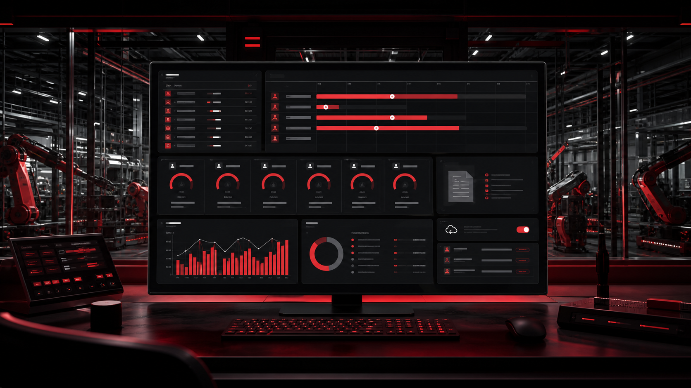
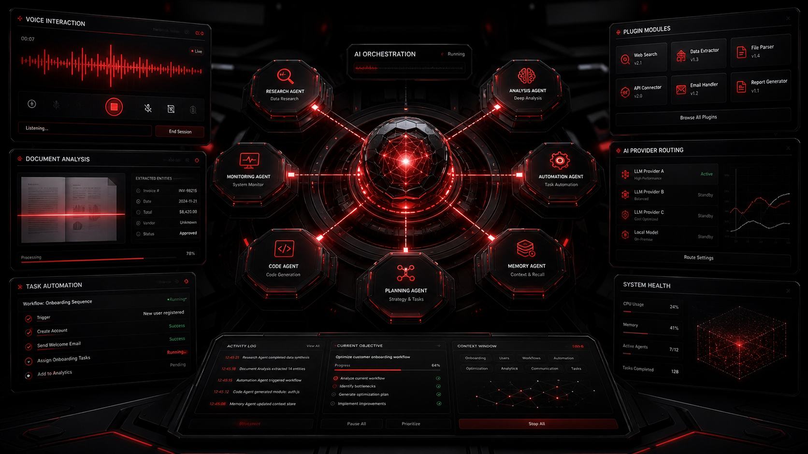

2024 — Present
Education
Bachelor of Technology · Artificial Intelligence and Data Science
Institution: Sri Shakthi Institute of Engineering and Technology · Current year: Third Year · Location: Coimbatore, Tamil Nadu
Available for projects +
Hello, I’m
I build practical AI and data-driven solutions that turn real-world problems into intelligent, meaningful experiences.
© Based in India
+ Turning ideas into
intelligent solutions.
01 / About
Learning fast. Building things that matter.
I’m Kamalesh J, a third-year Artificial Intelligence & Data Science student passionate about turning ideas into practical technology.
My work focuses on Artificial Intelligence, Machine Learning, Computer Vision, and Data Analytics, with an emphasis on building systems that solve real-world problems. I enjoy taking an idea from concept to implementation—experimenting with models, developing applications, working with data, and continuously improving the result.
Through projects, internships, hackathons, and hands-on learning, I’m building a strong foundation in both AI and software development while exploring how intelligent systems can create meaningful impact.
“I don’t just learn technology —I build with it.
03 / Journey
Education
Institution: Sri Shakthi Institute of Engineering and Technology · Current year: Third Year · Location: Coimbatore, Tamil Nadu
Experience
Data cleaning and preparation · Interactive dashboard development · Business-data analysis · Data visualization · Report creation · Identifying useful insights from datasets
Skills
04 / SKILLS EXPERTISE
ShopFloor AI
AI-Powered Workforce Management Platform
ShopFloor AI is an intelligent workforce and production-management platform designed to improve employee tracking, sales-order management, reporting, and shop-floor operations.
View Repository↗
A connected operations workspace that brings order intake, workforce activity, individual timers, reporting, and analytics into one clear system—helping teams move from live shop-floor signals to informed action.
EDITH
Multi-Agent AI Assistant
EDITH is an intelligent multi-agent assistant designed to automate tasks through specialized AI agents and an extensible plugin system.
View Repository↗
EDITH coordinates specialized agents through one assistant layer, routing each request to the right capability while keeping voice interaction, plugins, provider fallback, monitoring, and recovery inside a single extensible workflow.
Other Projects
A lightweight online exam-monitoring prototype using YOLOv8 and webcam processing to detect suspicious objects and behaviours with sustained-violation alerts.
An advanced AI proctoring platform combining YOLOv11, MediaPipe, ByteTrack, FastAPI, MongoDB, live dashboards, risk assessment, and automated reporting.
A desktop AI assistant integrating Gemini, Groq, OpenRouter, voice interaction, document analysis, media generation, system monitoring, and automatic provider fallback.
A mobile-first amusement park platform offering ride discovery, QR tickets, queue monitoring, payments, visitor management, and operational analytics.
A community emergency-alert application that broadcasts a user’s identity and live GPS location to nearby registered users and trusted emergency contacts.
A browser-based shop-floor management dashboard for tracking sales orders, labour assignments, employee hours, operational costs, and performance reports.
A machine-learning study using exploratory data analysis and Bayesian Ridge regression to examine relationships between fatalities, speed, alcohol, time, and accident severity.
A K-Means and Power BI solution that groups customers into VIP, high-value, regular, and low-value segments for targeted retention and marketing decisions.
An interactive dashboard that imports CSV or Excel sales data and visualizes revenue, profit, products, categories, regions, and performance trends.
A Flask-based computer-vision application using ONNX models and OpenCV to detect faces, swap them, and blend the generated results naturally.
A browser-based survival horror game where players manage limited health, power, sanity, and communication resources while attempting to transmit a final signal.
Achievements
Certificates
A hands-on record of AI, analytics, programming, workshops, and community learning. Drag the orbit or use the arrow keys to explore.
Skill India · Reliance Foundation
GitHub
10 / OPEN SOURCE LOG
Discover repositories, experiments, AI applications, Flutter projects, and data-analytics work in one evolving build log.
View GitHub Profile ↗Resume
View my education, technical skills, project experience, internship, certifications, and achievements.
Resume PDF ready to view or download.
Contact
I’m interested in opportunities involving Artificial Intelligence, Machine Learning, Computer Vision, Flutter development, full-stack development, and data analytics.